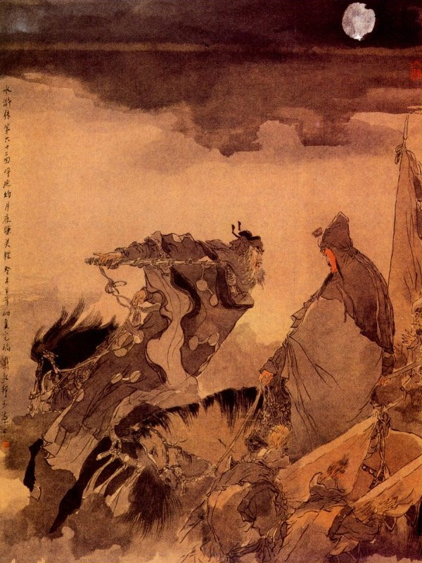
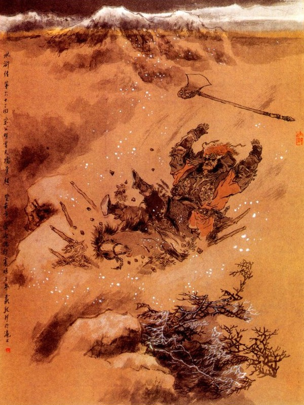

Nói về Tống Giang cùng các tướng hết sức đánh phá thành trì, song Lý Thành, Văn Đạt đóng vững cửa thành, không chịu ra đánh, trên thành phòng bị rất nghiêm, không sao mà phá ngay được. Tống Giang thấy quân sĩ đi đánh đã lâu mà không được nên công thì trong lòng lấy làm băn khoăn buồn bã, không biết lập kế ra sao?
Một buổi tối hôm đó, chàng đương ngồi buồn trong trướng, mở bộ Thiên Thư của Cửu Thiên Huyền Nữ ra xem thì bỗng thấy có người vào báo:
- Có Quân Sư Ngô Dụng đến hầu.
Tống Giang nghe báo liền đứng dậy đón Ngô Dụng vào để nói chuyện. Ngô Dụng nói với Tống Giang rằng:
- Quân ta đến đây vây đánh đã lâu mà không thấy quân mã đến cứu, trong thành cũng không chịu ra, chắc là Lương Trung Thư, lại cho người cáo cấp với bố vợ là Xài Thái Sư, để đem binh ra tiếp ứng ở đây mà trong đám đó hẳn có tay tướng giỏi. Nếu họ lại dùng kế vây nước Ngụy cứu nước Triệu, nghĩa là họ không đến đánh ở đây mà đánh thẳng vào Lương Sơn Bạc thì có lẽ nguy mất. Việc đó Huynh trưởng phải nên lưu tâm, thu thập quân sĩ đi trước, dẫu không lui về cả, song...
Vừa nói đến đó thì Thần Hành Thái Bảo Đới Tung đến báo rằng:
- Nay Xài Thái Sư đón người cháu Quan Bồ Tát là Đại Đao Quan Thắng ở Bồ Đông làm Đại Tướng dẫn quân đến đánh Lương Sơn Bạc, các Đầu Lĩnh ở nhà đều lấy làm kinh hoảng lo sợ, vậy xin Huynh trưởng cùng Quân Sư hãy tạm lui binh, về cứu Lương Sơn rồi sau sẽ liệu. Ngô Dụng nghe nói, bàn với Tống Giang rằng:
- Đã đành như vậy, song ta đây không thể về vội ngay được. Đêm nay hãy cho quân bộ đi trước, còn để cho hai toán quân mã nấp ở hai bên Phi Hổ Dực, phòng bị quân mã trong thành theo đuổi thì mới có thể chống cự lại được.
QUAN THẮNG
Tống Giang khen phải liền cắt Tiểu Lý Quảng Hoa Vinh dẫn năm trăm quân mã mai phục ở bên tả Phi Hổ Dực và Báo Tử Đầu Lâm Xung dẫn năm trăm quân mã phục ở bên hữu, Lại truyền cho Hô Diên Chước dẫn hai mươi quân kỵ, cùng Lăng Chấn đem súng đặt ở gần thành, cách chừng hai mươi dặm để đợi khi quân mã trong thành ra đuổi thì ra hiệu cho quân phục biết. Đoạn rồi truyền lệnh cho quân tiền đội, dần dần kéo lui như mây tan như mưa tạnh, dù gặp quân mã nào cũng không được đánh nhau. Đám bộ quân vâng lệnh, nửa đêm hôm ấy kéo đi, mãi đến giờ Tý hôm sau mới hết.
Bấy giờ trên thành trông thấy quân sĩ Tống Giang đều cuốn cờ vác đoá, cùng nhau nhổ trại kéo lui, liền đem tin tức vào báo cho Lương Trung Thư biết. Trung Thư nghe báo, lập tức gọi Lý Thành, Văn Đạt lên để bàn. Văn Đạt nói:
- Sự này chắc là quân mã Đông Kinh đến đánh Lương Sơn Bạc, nên họ sợ mất sào huyệt mà phải kéo quân về giữ. Vậy bất nhược ta thừa thế đuổi đánh một trận thì thế nào cũng bắt được Tống Giang.
Đương khi bàn bạc thì bỗng thấy có người báo, có công văn ở Đông Kinh đưa ra, ước định đem quân đánh thẳng Lương Sơn Bạc và khi Tống Giang kéo về thì phải đuổi theo mà đánh. Lương Trung Thư nghe báo, bèn sai Lý Thành, Văn Đạt dẫn hai toán quân đi theo hai đường Đông Tây để đuổi.
Bấy giờ quân mã Tống Giang đương lục tục lui về, chợt thấy quân mã trong thành ra đuổi, chúng liền ùa nhau mà nhất tề kéo chạy, Lý Thành, Văn Đạt thấy vậy, liền thúc quân đuổi riết để đánh.
Khi đuổi đến Phi Hổ Dực, chợt nghe tiếng đằng sau lưng có tiếng nổ đánh đùng đùng rồi trống trận nổi lên như sấm động, quân mã ở đâu bỗng kéo cờ vác đáo xông ra, uy thế rất là hùng dũng, Lý Thành, Văn Đạt luống cuống, ngựa chưa kịp xoay giở, đã thấy bên tả có Hoa Vinh, bên hữu có Lâm Xung đều đổ ập đến để đánh.
Hai người biết là mắc kế vội vàng lui quân trở lại. Bất đồ lại gặp toán quân mã của Hô Diên Chước, đều ra sức xông đánh rất là hăng hái. Lý Thành, Văn Đạt bị thua một trận xác sơ, rách cả áo mất cả mũ rồi cùng nhau kéo về trong thành, đóng cửa lại không dám thò ra nữa. Bên kia quân mã Tống Giang lại thứ tự ung dung mà kéo về Sơn Bạc. Khi về gần tới Lương Sơn, gặp toán quân của Tuyên Tán ngăn chặn đường đi, Tống Giang liền truyền lệnh tạm hạ dinh trại rồi sai người theo đường tắt trở về báo cho sơn trại và ước hẹn quân mã thủy trại để cùng cứu ứng. Khi đó hai Đầu Lĩnh là Trương Hoành, Trương Thuận bàn với nhau rằng: :
- Anh em ta từ khi đến đây, chưa lập được chút công lao gì. Hiện nay Đạo Đao Quan Thắng chia quân ba đạo tiến đánh ta đây, vậy bất nhược anh em ta kéo ra cướp trại, bắt lấy Quan Thắng mà lập lấy đại công thì đối với anh em cũng được kiêu hãnh đôi chút, chú nghĩ sao?
Trương Thuận nói:
- Tôi cùng Ca Ca chỉ coi về mặt thủy quân, nếu lỡ ra thế nào thì không có người cứu ứng thì tất là mang tiếng với anh em, không tiện.
- Nếu cứ như vậy thì đến năm nào mới lập được công? Ngươi không đi thì thôi, đêm nay ta đi một mình vậy,
Trương Thuận hết sức can gián, Trương Hoành nhất định không nghe. Đêm hôm đó Trương Hoành điểm năm mươi chiếc thuyền, mỗi thuyền có năm ba tên lính, tay cầm trường sang đao lá chuối rồi thừa lúc đêm trăng tịch mịch mà kéo thuyền đi ra đường bộ, để cùng nhau đến cướp trại. Đêm hôm ấy Quan Thắng đang ngồi xem sách trong trướng, bỗng thấy người báo, có bốn năm mươi chiếc thuyền ở trong đám lau lách đi ra, người nào người nấy đều cầm trường sang trong tay, không biết có việc chi? Quan Thắng nghe báo cười nhạt một tiếng rồi quay lại người tỳ tướng bên cạnh mà nói mấy câu rất nhỏ, người ngoài không hiểu ra sao?
Bên kia Trương Hoành dẫn mấy trăm lâu la theo đám lau lách lần vào nhổ hết chông gai, đi thẳng đến trại Quan Thắng. Bấy giờ khoảng quá canh hai, chàng đi vào đến trại Trung Quân, thấy trong trướng đèn nến sáng choang. Quan Thắng đương ngồi vuốt râu xem sách. Trương Hoành mừng thầm trong bụng, tay cầm cây gươm trường, sấn vào trong trướng để bắt. Chợt đâu nghe tiếng thanh la nổi lên rồi thấy quân sĩ reo hò quát tháo chẳng khác gì trời long đất lở, núi lở sông xoay làm cho Trương Hoành phải kinh sợ rụng rời mà quay đầu toan chạy.
Chàng vừa quay đều toan chạy thì quân phục ở bốn mặt đổ ra ầm ầm rồi bắt hết cả mấy trăm người, cùng Trương Hoành mà giải vào, cùng Trương Hoành mà giải vào cho Quan Thắng. Quan Thắng trông thấy Trương Hoành cười mà mắng rằng:
- Quân giặc cỏ thấm vào đâu mà dám trêu ghẹo đến ta?
Nói đoạn liền sai giam Trương Hoành vào xe tù mà giam hết bọn quân sĩ ở đó, để đợi bắt được Tống Giang sẽ giải về Kinh Sư. Nói về ba anh em họ Nguyễn cũng coi thủy trại ở Lương Sơn Bạc, hôm đó đương ngồi bàn chuyện với nhau, chợt thấy Trương Thuận chạy đến nói rằng:
- Ca Ca tôi không nghe lời tôi can, đem quân đến cướp trại Quan Thắng bất đồ bị bắt giam vào xe tù, không biết làm sao cho được?
Nguyễn Tiểu Thất nghe nói kêu lên rằng:
- Anh em chúng ta cùng sống cùng chết, hoạn nạn có nhau, vậy anh là anh em ruột với Trương Hoành, sao anh lại để cho đi một mình, đến nỗi bị người ta bắt được? Nay anh không đi cứu thì để ba anh em tôi đi cứu cho.
Trương Thuận nói:
- Vì tôi chưa được tướng lệnh của Tống Ca Ca, nên không dám đi liều.
- Nếu đợi Tướng lệnh thì anh bác có lẽ bị nó đem làm mắm mất rồi.
Nguyễn Tiểu Nhị, Nguyễn Tiểu Ngũ cũng đều lấy làm phải mà thúc nhau đi cứu Trương Hoành. Trương Thuận lại cố can không được, sau đành phải chịu theo với họ, Trống đầu canh tư hôm đó, các Thủy trại Đầu Lĩnh đều dẫn hơn hai trăm chiếc thuyền kéo ra để cướp trại Quan Thắng thấy vậy, lại vào báo cho chủ tướng biết. Quan Thắng nghe báo cười rằng:
- Quân ngu dốt thực!
Nói đoạn dặn thầm tùy tướng mấy câu như trước. Đằng kia ba anh em họ nguyễn đi trước, Trương Thuận đi sau, ầm ầm kéo nhau đến trại Quan Thắng. Khi tới nơi thấy trong trại đèn nến sáng choang mà vắng tanh vắng ngắt không có ai đi lại. Ba anh em họ Nguyễn lấy làm nghi ngờ, toan quay ra để chạy, bỗng đâu thấy trước trướng nổi lên mấy tiếng thanh la rồi thấy bốn bên tả hữu các quan mã bộ, có tới tám đường đổ ra mà vây chặt lấy.
Trương Thuận thấy sự thế nguy cấp liền lui lại nhảy tót xuống nước rồi ba anh em họ Nguyễn cũng cướp đường để chạy ra bến nước, Bất đồ bị quân lính Quan Thắng thả giây móc bắt được Nguyễn Tiểu Thất đem đi. Còn Nguyễn Tiểu Nhị, Tiểu Ngũ thì có Lý Tuấn, Đồng Uy, Đồng Mãnh, cứu về trong trại.
Khi về tới sơn trại. Liền báo tình hình cho sơn trại biết. Lưu Đường liền sai Trương Thuận đi đường thủy đến trại Tống Giang, để báo cho Tống Giang biết. Tống Giang liền gọi Ngô Dụng đến để bàn kế. Ngô Dụng nói với Tống Giang rằng:
- Ngày mai ra đánh một trận xem thua được thế nào rồi ta sẽ liệu.
Đương khi bàn luận với nhau, bỗng thấy trống trận nổi lên ầm ầm rồi có người vào báo rằng:
- Tuyên Tán bộ lãnh tam quân thẳng đến đại trại để khơi đánh.
Tống Giang nghe báo, vội dẫn quân ra tiếp đón, khi ra tới nơi, thấy Tuyên Tán đứng bên kia thách đánh. Tống Giang liền hỏi:
- Anh em, ai ra ngựa trước xem sao?
Nói chưa dứt lời thì thấy Tiểu Lý Quảng Hoa Vinh vỗ ngực cầm thương ra đánh Tuyên Tán. Tuyên Tán cũng múa đao ra đỡ. Đôi bên đánh nhau chừng hơn mười hiệp thì Hoa Vinh lừa miếng phá đĩnh mà quay ngựa chạy thẳng. Tuyên Tán liền vỗ ngựa hăng hái đuổi theo. Hoa Vinh thấy Tuyên Tán đuổi theo, bèn đeo gươm vào rồi lấy cung đặt tên, quay mình lại nhắm Tuyên Tán một phát, Tuyên Tán nghe tiếng cung bật, vội giơ đao lên gạt thì mũi tên bắn vào lưỡi đao ken một cái. Hoa Vinh lấy mũi tên nữa, nhè lúc Tuyên Tán đến gần, bắn luôn một phát thứ hai vào trước bụng. Tuyên Tán né mình tránh khỏi, mũi tên bắn ra chỗ không. Tuyên Tán thấy nghề bắn cung của Hoa Vinh tài giỏi, liền quay ngựa lại mà không dám đuổi nữa. Hoa Vinh thấy Tuyên Tán không đuổi, bèn quay ngựa lại lấy mũi tên thứ ba, nhằm vào sau lưng Tuyên Tán bắn thêm phát nữa. Vừa bắn xong, nghe tiếng kêu đến binh môt cái, té ra mũi tên lại vừa bắn vào miếng kính yểm tâm.
Tuyên Tán vội vàng về trận, báo cho Quan Thắng biết. Quan Thắng gọi lính dắt ngựa ra, lập tức vác đao Thanh Long, lên ngựa Xích Thố mà thẳng xông ra trận.
Tống Giang trông thấy Quan Thắng rõ ra vẻ anh tài lẫm liệt, bèn chỉ bảo Ngô Dụng mà khen ngợi luôn mồm. Đoạn rồi quay lại nói to lên với các Tướng rằng:
- Quan Tướng Quân một bậc anh hùng, thực là đáng lắm.
Lâm Xung thấy vậy, khí tức nổi lên đùng đùng, liền kêu lên rằng:
- Anh em chúng ta, từ khi lên ở Sơn Bạc đến nay, đánh nhau cũng đã có năm bảy mươi trận, có khi nào chịu nhục với ai? Sao ngày nay lại giảm uy phong như vậy?
Nói đoạn múa thương ra ngựa, thẳng xông sang đánh Quan Thắng. Quan Thắng quát to lên rằng:
- Bớ quân giặc cỏ ở bến vũng nước, ta không có thì giờ đánh bắt các ngươi, cứ bảo Tống Giang ra đây, ta hỏi vì cớ sao dám bội bạc triều đình?
Tống Giang nghe nói vội thét Lâm Xung dừng lại rồi phóng ngựa ra trận nghiêng mình chào Quan Thắng mà nói rằng:
- Chúng tôi là Tống Giang tiểu lại ở Vận Thành, xin chào Tướng Quân. Có tội gì xin cứ hỏi?
Quan Thắng nói:
- Ngươi là kẻ tiểu lại, sao dám phản bội triều đình?
- Vì triều đình vô đạo, dong túng kẻ gian thần, không có trung lương tiến đạt, đám quan tham lại nhũng đầy dẫy nhân gian làm hại biết bao nhiêu người lương thiện, nhân vậy Tống Giang này phải thay trời làm đạo, chứ không có bụng gì khác cả.
- Rõ ràng bay là giặc cỏ. Thay trời làm đạo làm đạo nào. Nay binh trời đến đây lại còn khéo nói hay sao? Nếu không xuống ngựa chịu trói thì ta truyền cho nát xác bây giờ.
Tìch Lịch Hoả Tần Minh nghe nói, kêu lên một tiếng rất to rồi múa Lang Nha Côn vỗ ngựa xông ra, Lâm Xung cũng múa Phi Thương ra để đánh,
Hai Tướng hăng hái xông vào. Quan Thắng múa đao đón đánh, cát bụi tung lên như đèn kéo quân vậy. Chợt đâu thấy Tống Giang chỉ chỉ gật gật rồi sai khua chiên rút quân về. Lâm Xung, Tần Minh quay vào nói với Tống giang rằng:
- Chúng tôi đương vây bắt hắn, sao Huynh trưởng lại vội thu quân?
Tống Giang nói to lên rằng:
- Anh em phải biết, chúng ta đây vốn giữ lòng trung nghĩa, nay đem hai người mà đánh một người sao nỡ! Như thế có bắt được hắn, chắc là hắn cũng không phục. Và ta xem Đại Đao là một tướng nghĩa dũng, dòng dõi trung thần, ông cha xưa nay làm thần làm thánh, ai ai cũng đến phụng thờ, nếu nay bắt được người ấy lên núi thì Tống Giang xin tình nguyện nhường ngôi đó.
Lâm Xung, Tần Minh nghe nói, đều biến sắc mặt mà lui vào. Đoạn rồi hai bên đều thu quân về trại. Quan Thắng về đến trong trại, xuống ngựa cởi giáp, trong lòng nghĩ thầm rằng: "Ta hết sức đánh với hai Tướng có lẽ sắp thua với họ, thế mà Tống Giang vội khua chiên thu quân, không biết là ý tứ làm sao?”
Nghĩ đoạn liền sai đẩy xe tù Trương Hoành, Nguyễn Tiểu Thất ra mà hỏi rằng:
- Tống Giang chỉ là một anh tiểu lại ở Vận Thành, sao mà các ngươi lại phục hắn như vậy?
Nguyễn Tiểu Thất vội nói lên rằng:
- Ca Ca tôi vẫn vốn là một người có tiếng ở Sơn Đông, ai ai cũng gọi là Cập Thời Vũ Tống Công Minh, các ngươi là người không biết trung nghĩa thì hiểu sao nổi mà hỏi.
Quan Thắng nghe nói, chỉ cúi đầu rồi lại sai đem xe tù để vào một chỗ. Tối hôm đó Quan Thắng đứng ngồi vơ vẩn không yên, bèn chạy ra sau trại nom quanh nom quẩn một mình, ngẩng trông lên thấy mịt mù sương toả, khí lạnh đầy trời, một bóng trăng suông lờ mờ hơi rõ, giang sang cảnh sắc trông ra đều có vẻ thương cảm bồi hồi, chàng thấy vậy lại càng ngao ngán, thở dài mà đứng mãi không đi.
Đương khi dùng dằng vẫn vơ, chợt thấy lính vào báo:
- Có một tướng rậm râu, một mình một ngựa, xin vào yết kiến Nguyên Súy.
Quan Thắng hỏi:
- Sao ngươi không biết hỏi xem ai?
- Bẩm, Ông ta không có mũ giáp quân khí chi cả mà cũng không chịu nói tên, chỉ nói là muốn yết kiến Nguyên Soái thôi.
Quan Thắng ngần ngại rồi gật đầu mà bảo rằng:
- Ngươi ra mời vào đây.
Tên lính vâng lời quay đi thì một lát dẫn người ấy vào. Khi vào trong trướng. Quan Thắng quay bảo người tỳ tướng bật đèn lên rồi trông người kia, thấy nét mặt có vẻ quen quen. Quan Thắng hỏi:
- Ông là ai?
Người kia nói:
- Xin đuổi người hầu đi rồi tôi sẽ nói.
Quan Thắng cười rằng:
- Làm người đại tướng ở trong đám muôn quân vạn lính, nếu không nhất đức nhất tâm làm sao sai khiến cho được? Trong trại tôi đây, bất cứ trong trướng, ngoài trướng, kẻ trên người dưới, đếu là tâm phúc của tôi cả, có việc gì xin cứ nói cho.
Người kia nói:
- Tiểu Tướng tức Hô Diên Chước, ngày trước đã từng vâng mạng triều đình, thống lĩnh trận ngựa Liên Hoàn ra đánh Lương Sơn Bạc, sau chẳng may lỡ mắc phải kế gian, sẩy hỏng việc quân, nên không dám trở về triều đình nữa. Mới rồi nghe tin Tướng Quân đến đây, trong lòng lấy làm vui mừng quá đổi. Trận đánh hôm nay Lâm Xung vốn định bắt Tướng Quân, sau Tống Giang sợ phạm hại đến ngài, nên phải khua chiên thu quân lập tức. Người ấy vốn có chí quy phục triều đình, nhưng bọn kia không chịu theo nên không dứt đi được. Nhân thế có bàn riêng với tôi, định để khu xử lòng người, sao cho quy thuận cả mới nghe. Vậy nếu Tướng Quân có lòng tin tôi thì đêm mai chỉ xin đem ít cung tên, dẫn ít quân kỵ, theo đường tắt dẫn đến sơn trại mà tróc nã bọn Lâm Xung thì không những Tướng Quân lập được công to mà tôi với Tống Giang cũng khả dĩ chuộc được tội xưa đôi chút, Tướng Quân nghĩ sao?

Quan Thắng nghe nói cả mừng, mời Hô Diên Chước vào trong trướng để thiết rượu. Hô Diên Chước lại đem chuyện Tống Giang là người hết lòng trung nghĩa, chẳng may bị hãm vào chốn bất nhân, để thuật cho Quan Thắng nghe, Quan Thắng nghe chuyện, lại vuốt râu uống rượu rồi vỗ đùi mà ta thán vô cùng. Sáng hôm sau đem quân ra khơi đánh. Quan Thắng bàn cùng Hô Diên Chước rằng:
- Đêm nay tuy có mưu kế đó, song hiện bây giờ cũng phải ra trận bắt đánh mấy tướng mới được.
Hô Diên Chước liền mượn mũ giáp, cưỡi ngựa xông ra trước trận. Tống Giang gọi Hô Diên Chước mắng rằng:
- Sơn trại có một chút gì phụ bạc với ngươi, sao ngươi nỡ nửa đêm bỏ đi mà cõng rắn cắn gà nhà như thế.
Hô Diên Chước đáp rằng:
- Một anh tiểu lại vô tri thì nên công trạng gì mà nói.
Tống Giang liền sai Trấn Tam Sơn Hoàng Tín xông ngựa ra đánh Hô Diên Chước. Hai bên đánh nhau chưa được mươi hiệp thì Hô Diên Chước đánh cho một chiêu, Hoàng Tín chết ngay trên mình ngựa. Quan Thắng trông thấy cả mừng, truyền lệnh cho tam quân nhất tề xông ra để đánh. Hô Diên Chước can rằng:
- Không nên đuổi họ, bên ấy có Ngô Dụng cũng là một tay thần cơ mưu mẹo rất nhiều, không khéo thì mất kế mất.
Quan Thắng nghe nói, vội thu quân về trại, cất chén mừng Hô Diên Chước mà hỏi rằng:
- Trấn Tam Sơn Hoàng Tín là thế nào?
Hô Diên Chước nói:
- Người đó cũng là mệnh quan của triều đình, trước làm Đô Giám ở Thanh Châu, sau cùng với Hoa Vinh, Tần Minh cùng đi lạc thảo. Hắn ta bình nhật đối với Tống Công Minh vẫn là bất hợp; ngày nay Tống Giang sai hắn ra đánh, chính là muốn giết đi cho rảnh.
Quan Thắng nghe nói lại cả mừng, liền truyền lệnh cho Hắc Tư Văn cùng Tuyên Tán chia quân làm hai đường để tiếp ứng và tự dẫn năm trăm quân kỵ, đều cung tên chỉnh đốn, để theo Hô Diên Chước đến trại Tống Giang, ước định canh hai hôm ấy ra đi vào khoảng canh ba thì tới trại rồi cứ nghe hiệu súng thì trong ngoài giáp đánh làm một.
Đêm hôm đó vẻ trời lạnh lẽo, trăng sáng trên không. Quan Thắng chuẩn bị đâu đó rồi ngựa tháo nhạc, người ngậm tăm, Hô Diên Chước dẫn đường đi trước, còn quân sĩ đều lục tục theo sau. Đi chừng nửa trống canh, chợt thấy một toán bốn năm mươi tên lính sẽ cất tiếng hỏi rằng:
- Có phải Hô Tướng Quân đấy không?
Hô Diên Chước quát lên rằng:
- Không được nói, cứ theo thẳng vào sau ngựa kia.
Đoạn rồi Hồ Diên Chước cứ xốc ngựa lên trước, Quan Thắng thì kèm ngựa đi sau. Lại đi một lúc, qua chốn mỏm núi. Hô Diên Chước cầm cây gươm trỏ vào một chỗ xa xa có ngọn đèn đỏ. Quan Thắng đứng dừng ngựa lại mà hỏi:
- Cái đèn đỏ ấy là chỗ nào?
Hồ Diên Chước đáp:
- Đó chính là trại Trung Quân của Tống Công Minh. Nói đoạn thúc quân mã phải đi cho riết. Khi đi gần đến chỗ đèn đỏ, bỗng nghe một tiếng súng hiệu rất to, trông quanh trông quẩn không thấy một ai, quay lại nom Hô Diên Chước cũng không thấy đâu nữa, Quan Thắng thấy vậy cả kinh, biết rằng trúng kế, vội vàng quay ngựa lui về.
Chợt đâu thấy bốn chung quanh núi, đều khua chiêng gõ trống vang lừng rồi đám quân mã kinh hoàng sợ hãi mà tranh nhau chạy mau để trốn, Khi Quan Thắng trông lại thì chỉ thấy có mấy tên kỵ theo mình, còn thì trốn đâu mất cả. Quan Thắng dẫn mấy tên kỵ vừa mới đi khỏi chỗ mỏm núi, bỗng thấy rừng cây ở phía sau có tiếng nổ đánh đoàng rồi bốn bên những quân câu móc đổ ra, giật Quan Thắng ngã xuống ngựa, cướp lấy đại đao, cởi lấy mũ giáp mà túm nhau đem về trại.
Đằng kia Hoa Vinh cùng Lâm Xung, dẫn một toán quân ra đón Tuyên Tán. Khi gặp nhau hai bên cùng ra sức hăng hái để đánh. Đánh được hai ba mươi hiệp, Tuyên Tán thấy đuối sức không địch nổi, liền quay ngựa để chạy. Khi chàng vừa quay ngựa lại thì gặp một viên nữ Tướng là Nhất Trượng Thanh Hổ Tam Nương tung tấm lưới móc hồng cẩm ra, kéo Tuyên Tán xuống ngựa rồi sai quân bắt trói mang về.
Về phần Hắc Tư Văn gặp Tần Minh, Tôn Lập đón đánh, Hắc Tư Văn trông thấy hai người, liền quát lên rằng:
- Bớ quân giặc cỏ, đứa nào ngăn trở ta là chết, tránh ta là sống.
Tần Minh cả giận, múa Lang Nha Côn xông đến đánh Hắc Tư Văn, hai bên đấu tranh chừng vài hiệp thì Tôn Lập toan xông vào để đánh, Hắc Tư Văn thấy vậy, tay sang hơi luống cuống, Tần Minh bèn thừa thế đánh một côn ngã lăn xuống ngựa. Đoạn rồi quân sĩ reo hò đổ đến để bắt.
Còn ở trại Quan Thắng thì có Lý Ứng dẫn quân đến cướp, cứu đám Trương Hoành, Nguyễn Tiểu Thất cùng đám thủy quân bị bắt rồi lấy hết lương thảo lừa ngựa, vỗ yên quân chúng mà về. Vào khoảng rạng sáng, Tống Giang họp các Tướng đến Trung Nghĩa Đường ở trên sơn trại rồi sai giải Quan Thắng, Tuyên Tán, cùng Hắc Tư Văn lên.
Khi chúng giải ba người lên, Tống Giang vội vàng xuống thềm, quát đuổi quân sĩ, thân hành cởi trói cho ba người rồi mời Quan Thắng lên ngồi ghế giữa mà cúi đầu lạy tạ mà nói rằng:
- Quân chúng ngu cuồng vong mênh, dám mạo phạm oai ngài, xin ngài tha tội chochỉ huy
Hô Diên Chước cũng cúi lạy mà rằng:
- Tôi vì tướng lệnh, không thế không được, xin ngài tha tội cuồng dại dối trá ấy cho.
Quan Thắng nom thấy các Đầu Lĩnh đều nghĩa khí trân trọng, có vẻ đáng phục, liền quay lại hỏi Tuyên Tán, Hắc Tư Văn rằng:
- Chúng ta bị bắt tới đây, nên như thế nào thì phải?
Hai người nói rằng:
- Xin tùy tướng lệnh của ngài.
Quan Thắng nói:
- Bây giờ cũng không còn mặt mũi nào trở về kinh nữa, xin cho chết sớm là hơn.
- Nếu ngài không khinh là bỉ lậu thì xin cùng ở lại đây để thay Trời làm Đạo, bằng không thì chúng tôi cũng không dám lưu lại làm chi, xin đưa ngài về kinh ngay lập tức.
Quan Thắng thở dài mà rằng:
- Người ta thường nói: Tống Công Minh nhân huynh trung nghĩa, thực là có thế. Người ta sống ở trên đời, vua biết thì đền ơn vua, bạn biết thì đền ơn bạn, ngày nay đã chuyển đến lòng thì xin ở đây làm đứa tiểu tốt để đền ơn tri ngộ cho xong.
Tống Giang nghe nói cả mừng, nhất diện đặt tiệc thiết đãi và nhất diện cho đi dỗ dành đám quân thua chạy, ước được năm bảy nghìn quân mã, kẻ nào có bố có mẹ ở nhà đều cấp tiền cho về nhà cả. Đoạn rồi sai Tiết Vĩnh đến Bồ Đông, đón vợ con Quan Thắng lên sơn trại. Hôm đó Tống Giang đương ngồi yến ẩm, chợt nghĩ đến nông nỗi Lư Tuấn Nghĩa cùng Thạch Tú ở Bắc Kinh thì lại ngẫm nghĩ mà lã chã tuôn đôi dòng lụy. Ngô Dụng liền nói lên rằng:
- Việc đó bất tất Huynh trưởng phải lo, tôi đã có cách đây rồi. Chỉ ngày mai đem quân đi đánh Đại Danh thì tất là thành sự.
Quan Thắng nghe nói bèn đứng dậy nói rằng:
- Quan mỗ chưa có chút gì để đền ơn yêu quý, vậy đi làm tiền bộ phen này.
Tống Giang cả mừng, liền tạ ơn Quan Thắng rồi cùng nhau yến ẩm rất vui. Ngày hôm sau truyền cho Tuyên Tán, Hoắc Tư Văn làm phó tướng cùng với Quan Thắng dẫn quân bản bộ, đi trước làm tiền bộ tiên phong, còn các Đầu Lĩnh cùng các quân đánh thành Đại Danh trước, nay đều nghe lệnh kéo đi và thêm có Trương thuận đem các đồ mũ giáp đi vào đó. Nói về Lương Trung Thư thấy Sách Siêu đã khỏi bệnh dậy được, trong lòng lấy làm vui mừng, trông ra thấy trời mờ sắc ám, gió Bắc gào thét bên tai, rất chiều ghê sợ, chợt đâu thám mã báo rằng:
- Quan Thắng, Tuyên Tán, Hắc Tư Văn, cùng các quân sĩ đều bị Tống Giang tróc nã, hiện đã nhập đảng với Tống Giang và kéo quân đến đây để đánh.
Lương Trung Thư nghe nói kinh ngạc rụng rời, bỗng rơi ngay xuống đất mà không biết, Sách Siêu thấy vậy liền bẩm rằng: - Trước đây tôi bị mũi tên ngầm, nay quyết báo thù mới hả, ân tướng không ngại chi.
Lương Trung Thư liền rót chén rượu nóng thưởng luôn cho Sách Siêu và dặn đem quân mã ra đón đánh rồi Lý Thành, Văn Đạt tiếp ứng ra sau. Bấy giờ đương tháng trọng đông (tháng một), khí trời lạnh lẽo trong mấy ngày trời, gió bấc đìu hiu, trời đất biến sắc, ngựa rét xoăn da, thiết giáp lạnh như băng tuyết, Sách Siêu vác cây đại phủ kéo quân ra đến Phi Hổ Dực để hạ trại. Ngày hôm sau Tống Giang dẫn Lã Phương, Quách Thịnh lên gò cao, để xem Quan Thắng đánh nhau. Khi trống trận đủ ba hồi, Quan Thắng xông ra trước trận rồi bên kia Sách Siêu cũng vỗ ngựa xông ra.
Sách Siêu mới ra, không nhận biết Quan Thắng, sau thấy quân sĩ nói lên rằng, người kia chính Đại Đao Quan Thắng mới bội bạc triều đình đó.
Sách Siêu lặng ngắt vác phủ vỗ ngựa ra đánh Quan Thắng. Quan Thắng múa đao lên đỡ. Đôi bên múa đao chừng mươi hiệp, Lý Thành thấy sức lực Sách Siêu khó lòng địch nổi Quan Thắng, liền múa đao ra trận, để hiệp lực cùng đánh. Bên này Tuyên Tán, Hắc Tư Văn thấy vậy cũng vác quân khí xông ra đánh giúp Quan Thắng. Năm con ngựa đều quần nhau một chỗ, cát bụi tung lên không biết đâu mà trông được. Tống Giang đứng trên gò cao trông thấy, liền vẫy đại quân kéo tràn sang đánh. Quân mã Lý Thành cả thua, bỏ chạy vào thành rồi Tống Giang cũng thu binh về trại.
Ngày hôm sau mây mờ che kín, đất thảm trời sầu, một mình Sách Siêu dẫn toán quân mã ra ngoài thành, xông đột thách đánh, Ngô Dụng liền sai một toán quân nhỏ ra đánh đùa, đợi cho Sách Siêu đuổi đến thì bỏ cả mà chạy, Sách Siêu được một trận, trong lòng lấy làm vui mừng hớn hở vào thành báo cho Trung Thư biết. Chiều hôm ấy, mây càng đen kín, gió càng thổi mạnh hơn lên. Ngô Dụng đưng trước trướng nom ra, thấy tuyết rơi phơi phới, đầy trời một vẻ tiêu sơ, chàng bèn sai quân sĩ đến các đường hẻm ven sông cạnh núi bên thành đào hầm xẻ hố rồi lấy đất phủ lên cho kín.
Đêm hôm đó mưa tuyết càng nặng, đến sáng hôm sau trên các đường đi, tuyết đọng chừng ngập cổ chân ngựa. Sách Siêu trèo lên thành nom ra thì thấy quân sĩ Tống Giang đều có vẻ sợ hãi kinh hoàng, ngồi đứng không yên, chàng liền điểm ba trăm nhân mã, xông ra thành để đánh. Quân mã Tống Giang thấy vậy đều chạy tán loạn mà thục lấy thân. Sách Siêu đuổi đánh mấy bước, bỗng gặp thủy quân Đầu Lĩnh là Lý Tuấn, Trương Hoành cưỡi ngựa cầm thương đón đánh. Đôi bên đánh nhau chưa được mấy hiệp thì Lý Tuấn, Trương Hoành đã bị thua, bỏ cả thương mà chạy, Sách Siêu nóng máu liền thốc ngựa đuổi theo hai người. Khi tới quãng đường kia, Một bên có khe nước, Lý Tuấn liền bỏ ngựa nhảy thẳng xuống khe kêu ầm lên rằng:
- Tống Công Minh Ca Ca chạy mau đi.

Sách Siêu nghe vậy, càng hết sức đuổi, tế ngựa lên để xông vào trận. Bỗng đâu thấy phía sau núi có một tiếng súng nổ rất to, cả người lẫn ngựa Sách Siêu đều bị sa xuống hố rồi có đám quân phục ở bên đường, đổ ùa ra mà bắt trói. Mới hay:
Nam nhi đạp đất đội trời,
Thù xưa mong trả, nợ đời mong trang.
Biết đâu thời vận phi thường,
Máy then xoay chuyển ai lường cho ra?
Bây giờ thế lỡ cơ sa,
Chim lồng cá chậu dễ mà trách ai?
Cho hay tiến thoái ở đời,
Có thân trước phải liệu thời cho tinh.
Lời bàn của Thánh Thán
Hồi này tả thủy quân cướp trại sao đến nổi nói qua loa như thế? Vì chủ ý làm nảy ra một Đại Đao Quan Thắng, còn mọi người không đáng kể chi! Tả Đại Đao từng chỗ thấy nảy ra biến tướng của Quan Vân Trường, khá nói rằng rất là nho nhã, rất là hoạt đạt, rất là trung thành và rất anh linh, trong đám một trăm lẻ tám người, lại có một bậc tuyệt luân siêu quần, lại không thể đem con mắt đọc mọi truyện khác mà đọc truyện này! Tả trời tuyết bắt Sách Siêu, chỉ tả qua Sách Siêu, lại cần tả ra tuyết trời kia. Tả lấy rõ thời tuyết tinh thần, khiến cho bắt được Sách Siêu, đó là phép thần nhiễm của hoạ gia, chẳng thể bỏ qua một chút.